复习
引言
- 格式塔法则 - 理解每一条，能够简单解释
- Law of Proximity (相近) - Elements that are closer together will be perceived as a coherent object
- 靠近的物体被认为是一个整体
- Law of Similarity (相似) - Elements that look similar will be perceived as part of the same form.
- 相似的物体被认为是一组（三角形一组，正方形一组）
- Law of Good Continuation (连续) - Humans tend to continue contours whenever the elements of the pattern establish an implied direction
- 倾向与看到连续的曲线而不是转折
- Law of Closure (封闭) - Humans tend to enclose a space by completing a contour and ignoring gaps in the figure.
- 倾向于看到封闭图形而不是有缺口的线段
- Law of Prägnanz(goodform) - A stimulus will be organized into as good a figure as possible. Here, good means symmetrical, simple, and regular.
- 倾向于看到规则图形
- Law of Figure/Ground - A stimulus will be perceived as separate from it's ground
- 容易看到背景上的图案
- Law of Proximity (相近) - Elements that are closer together will be perceived as a coherent object
- 计算机视觉从处理层次上分为三个阶段
- low level - 如图像滤波、图像增强、边缘检测、纹理检测、运动检测，以便从图像中抽取诸如角点、边缘、线条、边界、色彩、纹理、运动等关于场景的基本特征
- middle level - 主要任务是恢复场景的深度、表面法线方向、轮廓等有关场景的2.5维信息，实现的途径有立体视觉（stereo vision）、测距成像（rangefinder）、从X恢复形状（Shape from X, X = 明暗、纹理、运动）．系统标定、系统成像模型等研究内容一般也是在这个层次上进行的．分割、拟合等
- high level - 三维重建、识别并确认物体位置、方向
二值图像
- 几何特性 - 举例说出
- 尺寸 - 面积，所有为 1 的像素求和的大小
- 位置 - 区域中心（一阶矩）
- 方向 - 长轴方向，可用最小二乘法求解
- 伸长率 - \(x_{max}/x_{min}\)
- 密度集 - 面积/周长^2，给定周长，密集度越高，围成的面积就越大：圆 > 正方形 > 长方形
- 形态比 - 区域的最小外接矩形的长与宽之比
- 欧拉数 - 定义为连通分量数减去洞数（平移，旋转和比例不变
- 投影计算
- 定义：给定一条直线，用垂直该直线的一簇等间距直线将一幅二值图像分割成若干条，每一条内像素值为1的像素的数量
- 对角线投影的计算
- 对角线标号 d = i-j+m
- 连通区域 - 连通像素的集合
- 序贯算法（4联通
- 从左至右、从上到下扫描图像
- 如果像素点值为1，则（分4种情况）
- 如果上面点和左面点有且仅有一个标记，则复制这一标记
- 如果两点有相同标记，复制这一标记
- 如果两点有不同标记，则复制上点的标记且将两个标记输入等价表中作为等价标记
- 否则给这一个象素点分配一新的标记并将这一标记输入等价表
- 如果需要考虑更多点，则返回(2)
- 在等价表的每一等价集中找到最低的标记
- 扫描图像，用等价表中的最低标记取代每一标记
- 区域边界跟踪算法
- 从左到右，从上到下扫描图像，求区域 S 的起始点 s(0)
- 用c表示当前边界上被跟踪的象素点，置 c=s(k)，记c的左邻点为 b，b 不属于 S
- 按逆时针方向记从b开始的c的8个8邻点分别为
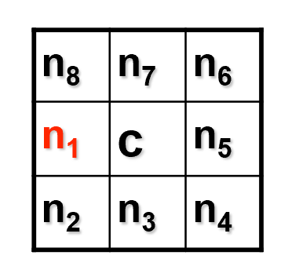
- 从b开始，沿逆时针方向找到第一个属于 S 的点
- 置 \(n_i\) 为下一个 c，\(n_{i-1}\) 为下一个 b（保证 b 不属于 S）
- 重复步骤(3),(4),(5)，直到 s(k)=s(0)
- 序贯算法（4联通
边缘
- 会计算模板卷积
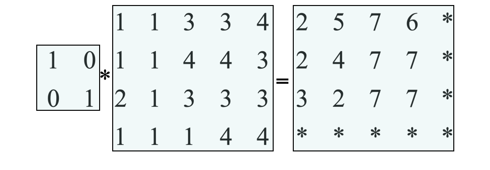
- 四种最主要的不连续
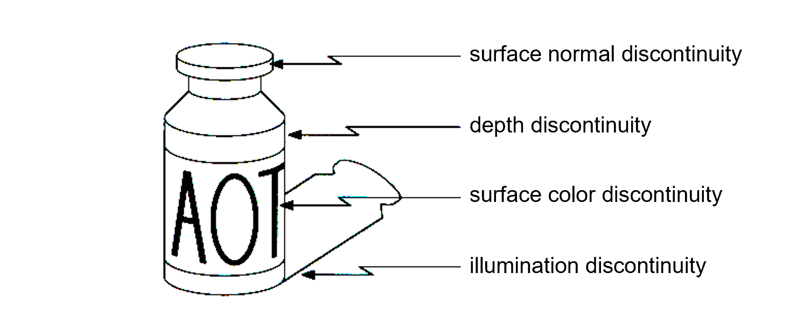
- 基本思想 - 找到不连续
- 函数导数反映图像灰度变化的显著程度．
- 一阶导数的局部极大值，或二阶导数的过零点
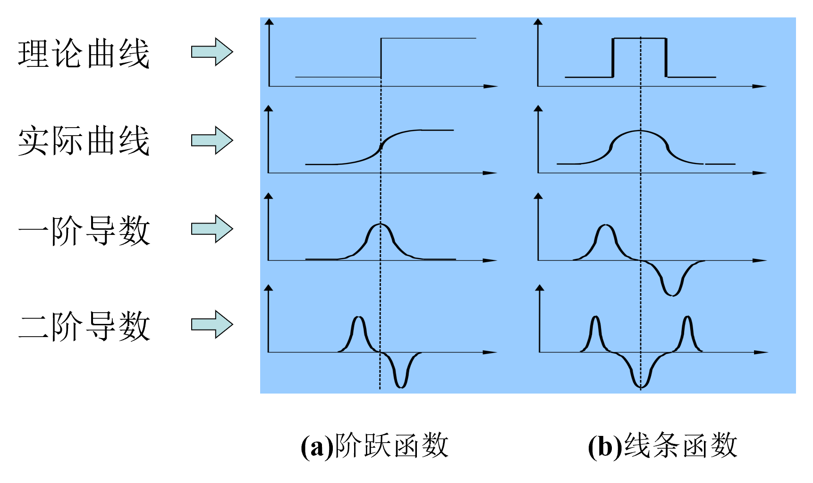
- 基于一阶的边缘检测
- 差分近似偏导数
- Roberts交叉算子
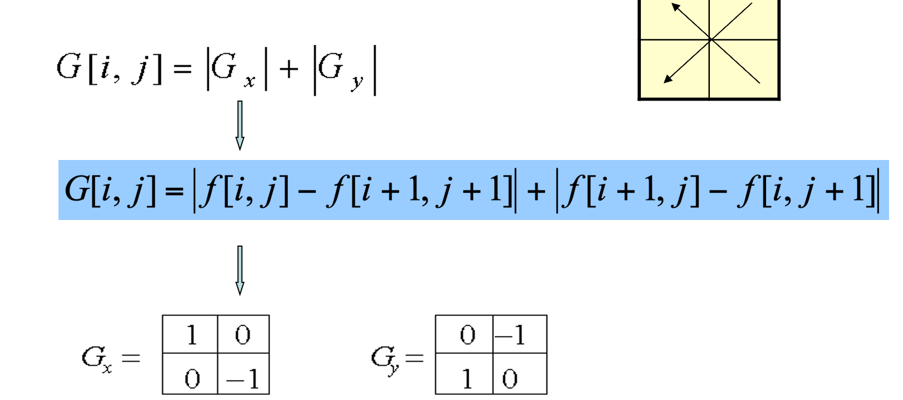
- Sobel算子
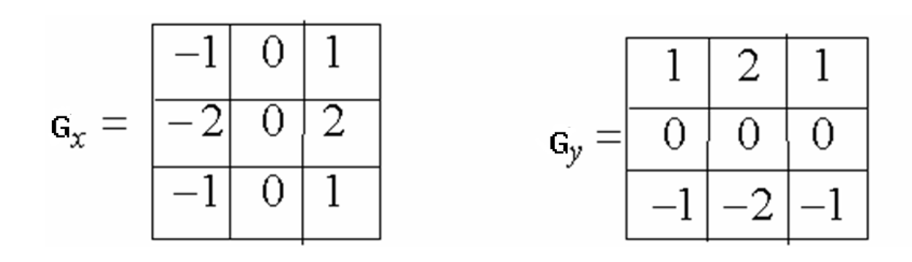
- Prewitt算子：运算较快
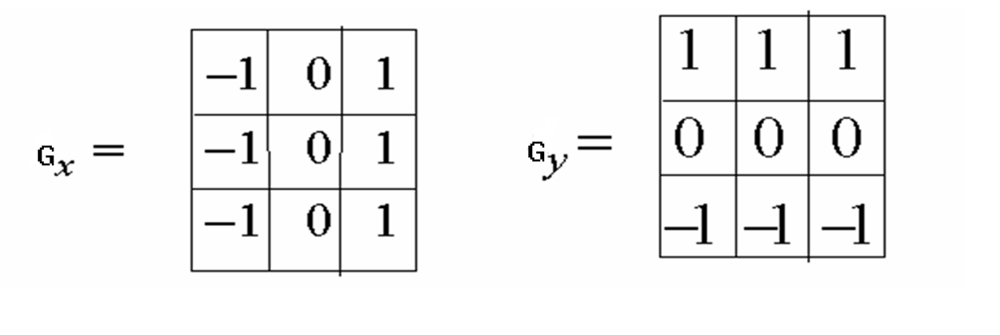
- Sethi算子
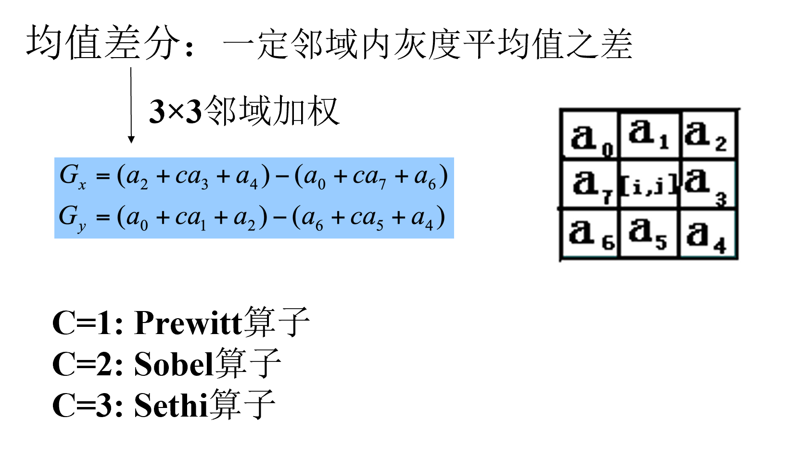
- 基于二阶的边缘检测
- Laplacian算子
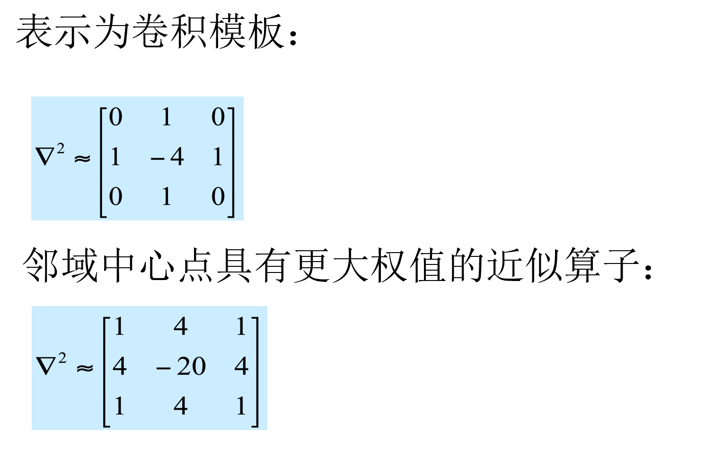
- LoG算子 （Marr&Hildreth算子）-高斯滤波+拉普拉斯边缘检测
- 为什么加 G - 降低图像中的噪声，保留边缘
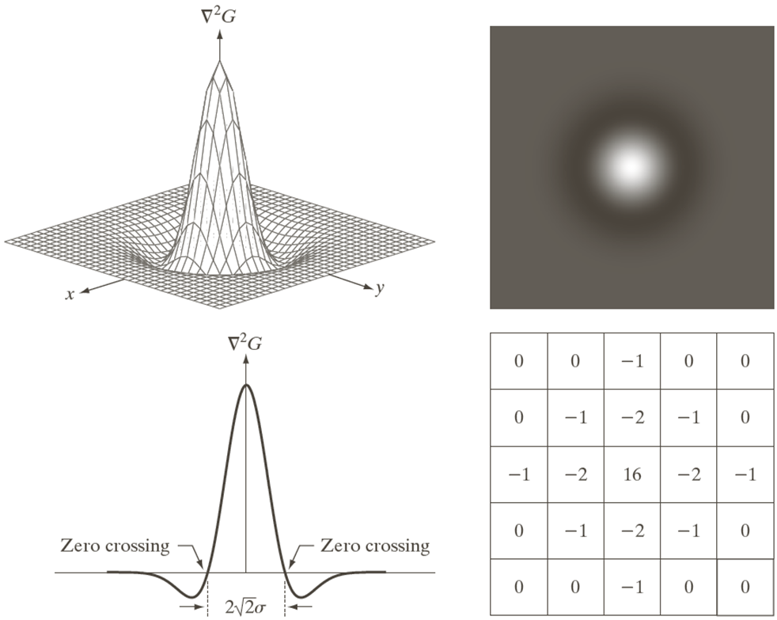
- 为什么加 G - 降低图像中的噪声，保留边缘
- Laplacian算子
- Canny
- 关键步骤
- 用高斯滤波器平滑图像．- 平滑去噪和边缘检测是一对矛盾，应用高斯函数的一阶导数，在二者之间获得最佳的平衡。
- 用一阶偏导有限差分计算梯度幅值和方向.
- 对梯度幅值进行非极大值抑制（NMS）- 去掉幅值局部变化非极大的点．
- 用双阈值算法检测和连接边缘．- 连接高阈值边缘图，出现断点时，在低阈值边缘图中的8邻点域搜寻边缘点
- 双阈值法的意义
- 阈值太低 - 假边缘;
- 阈值太高 - 部分轮廊丢失.
- 选用两个阈值: 更有效的阈值方案
- 关键步骤
曲线
- Hough 变换
- 用来解决从图像中检测几何形状：尤其是直线、圆的问题
- 可以处理噪声和不完整信息：由于它是基于全局投票的方式，Hough 变换对噪声具有一定的鲁棒性。
- 转换为参数空间问题：通过将图像空间映射到一个参数空间（如极坐标），简化了形状检测的问题。
- 基本思想：图像中每一点对参数组合进行表决，赢得多数票的参数组合为胜者（结果）
- 图示解释 Hough 变换做直线检测的具体原理
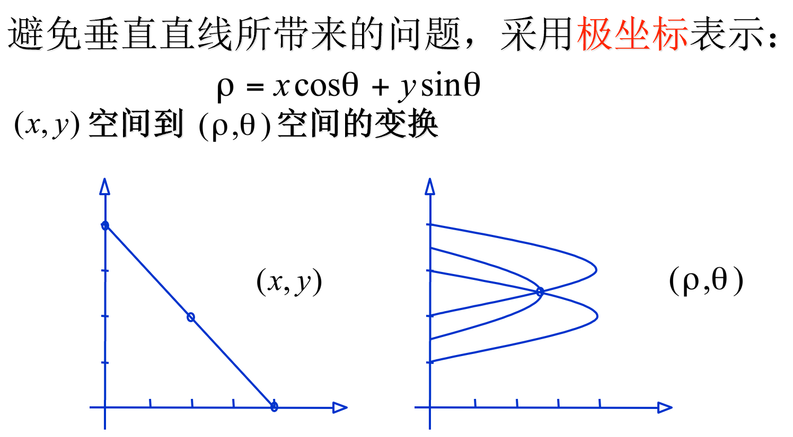
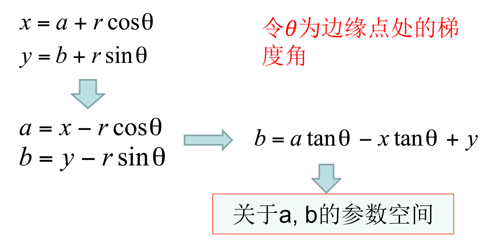
- 直线检测的基本步骤
- 适当地量化参数空间（合适的精度即可）．
- 假定参数空间的每一个单元都是一个累加器，把累加器初始化为零．
- 对图像空间的每一点，在其所满足的参数方程对应的累加器上加1．
- 累加器阵列的最大值对应模型的参数．
- 圆检测的基本步骤
- 量化关于a，b的参数空间到合适精度
- 初始化所有累加器为0
- 计算图像空间中边缘点的梯度幅度和角度
- 若边缘点参数坐标满足则该参数坐标对应的累加器加1
- 拥有最大值的累加器所在的坐标即为图像空间中的圆心之所在
- 得到圆心坐标之后，我们可以很容易反求r
- 参数空间离散化
- 精度高：资源消耗多，噪声敏感
- 精度低：误判或漏判，直线精度不高
- 用来解决从图像中检测几何形状：尤其是直线、圆的问题
局部特征
- Harris 角点检测
- 基本思想：使用固定窗口在图像任意方向上滑动，如果每个方向都有较大的灰度变化，可以认为存在角点
- 推导公式
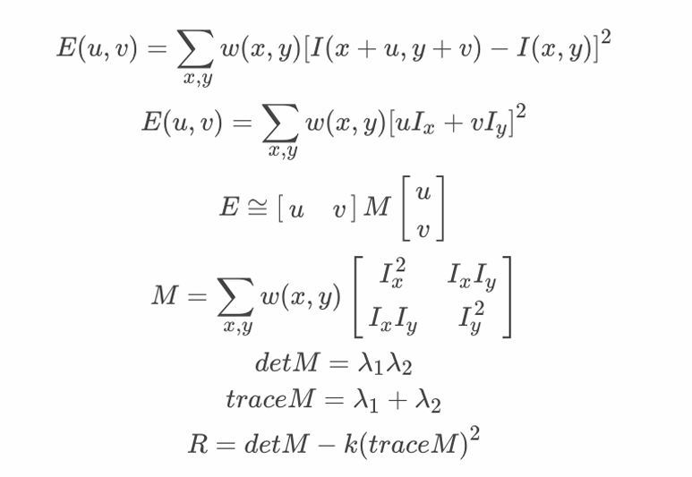
- 特征值和角点的关系
- M 的两个特征值表示图像在局部区域内沿不同方向上的变化强度
- 一个大一个小，说明是边缘
- 两个都大，说明是角点
- 不变性定性判断 - 旋转不变性，尺度/灰度仿射没有不变性（特征值发生变化）
- SIFT 描述子的计算
- Full version 的基本计算步骤
- 构建尺度空间，建立图像金字塔
- 寻找极值点（相邻的 26 个点中最大/最小值）
- 去除不好的特征点：使用近似的 harris corner，检测关键点的尺度和位置，并且去除边缘响应点
- 用 16*16 的窗口放在特征点附近
- 将 1616 分成 16 个 44
- 计算窗口中每个像素的边的方向（梯度角减 90 度）
- 丢掉方向能量小的边（使用阈值），用直方图描述结果
- 将每个小窗口的所有方向离散成 8 个方向，一共 16*8 = 128 个
- 为什么使用梯度直方图：梯度信息可以表示边缘信息，在光照变化时有抵抗能力
- 如何实现旋转不变：旋转后周围点不变（计算 grid 里的梯度 bin 需要旋转到主方向）
- Full version 的基本计算步骤
- 大致理解实现尺度不变的原理 - 尺度不变性的基本原理是在多尺度空间中搜索图像特征，能够适应图像的缩放，并从不同的尺度中找到具有区分性的特征点。这通常通过构建一个尺度空间来实现，尺度空间允许我们在不同的图像尺度上同时对图像进行分析，从而提取出最稳定的特征。
- SIFT 的尺度空间构建采用了 高斯金字塔（Gaussian Pyramid）。具体步骤如下：
- 首先，原始图像通过高斯滤波器生成多个不同尺度的图像。每个尺度的图像都是对原始图像进行不同程度模糊处理的结果。
- 然后，图像会构建成一个 高斯差分金字塔（DoG，Difference of Gaussian），其本质是从相邻的两个尺度图像之间进行差分运算，来突出图像中的边缘和角点等特征。
- SIFT 的尺度空间构建采用了 高斯金字塔（Gaussian Pyramid）。具体步骤如下：
图像拼接
- 基本步骤
- 找到两张图像的相似点（至少 4 个），计算 homography 变换矩阵
- 变换一张图到另一张图的合适位置，并计算融合区域新的像素值
- 图像金字塔
- 拉普拉斯金字塔 - 相邻两层高斯金字塔的差（高通减低通）
- 频带从低到高地叠加，恢复细节（低层频带高）
- 亮度灰度剧烈变化的地方是高频，对应边缘
- 变化不大的是低频，对应大片色块
- 高斯金字塔 - 不同尺度的高斯滤波，高层还要下采样
- 描述图像在不同尺度下的变化
- 底层对应于图像的原始尺度
- 高层对应大尺度
- 拉普拉斯金字塔 - 相邻两层高斯金字塔的差（高通减低通）
- RANSAC
- 可以解决什么问题：从数据中分离出模型的正确拟合部分，并忽略离群点
- 核心思想
- “inlines” 可以通过几组模型的参数来叙述其分布，“outlines” 不适合模型化
- 数据受噪声（离群）的影响
- RANSAC 假定给定（小）内存，存在一个程序可以估算一组数据模型的参数
- 优点 - 大范围问题上的一个普遍意义上的方法，运用简单，计算快
- 基本步骤（LOOP）
- 随机选择几个点设为内群
- 计算拟合内群的模型
- 把其他点带入模型并计算是否为内群
- 记下内群点的数量
- 重复以上步骤
- 最多的那次是解
- outliner 比例给定的情况下，k 次采样后计算成功的概率是 [ P_{\text{at least one success}} = 1 - P_{\text{all failures}} = 1 - (1 - p^n)^k ]
- 与 Hough 变换的共同之处 - 都选择最符合大多数点的模型，从带有噪声或离群点的数据中估计几何模型，具有一定的 鲁棒性。
主元分析与人脸识别
- 主元分析（PCA）
- 基本思想 - 最小化数据投影后的方差损失（重构误差）
- 什么数据用 PCA 最有效
- 高维数据
- 线性相关性强的数据（数据的协方差矩阵是稠密的）
- 正态分布数据
- 优化目标函数的推导：\(a_1^TSa_1\)（由于数据已经中心化，每个特征的均值为零）
[
S = \frac{1}{m-1} X^T X
]
[
\text{Var}(y) = \frac{1}{m} y^T y = \frac{1}{m} (X a_1)^T (X a_1) = \frac{1}{m} a_1^T X^T X a_1 = a_1^T S a_1
]
- 协方差矩阵的最大特征值的特征向量是我们要的投影
- 选取多少个特征向量的子空间？（根据精度
- 累计方差贡献率
- 与 DCT 的相同之处：都是降维方法；不同之处：PCA - 全局，DCT - 局部特征
- 降维后怎么升回来：通过主成分矩阵的转置来近似地重构数据
- Eigenface
- Eigenface 是指人脸图像的主成分
- 基本步骤
- 预处理：根据人眼位置进行裁剪，对灰度均衡化
- 二维人脸图像按一行行向量排成一列，得到列图像，并把所有列图像拼起来，并求出平均人脸
- 计算图像的协方差矩阵
- 求协方差矩阵的特征值，以及归一化的特征向量，即为特征人脸
- 人脸重构的线性加权求和公式
[
c_i = \mathbf{e}i^T (I - \mathbf{\mu})
]
[
I{\text{reconstructed}} = \mathbf{\mu} + \sum_{i=1}^{k} c_i \cdot \mathbf{e}_i
]
- 人脸识别：计算重构误差，即实际图像与重构图像之间的差异。误差越小，表示该图像越可能是人脸
- 白噪声重构：通常表现为随机的噪声图案，因为噪声图像与人脸的主成分空间没有关联，重构误差会非常大
- Eigen-X 需要重点注意
- 数据的预处理和标准化
- 选择合适的特征数（维度）
- 解释性问题
- 金融数据、气象数据等，往往包含一些相关性较强的特征（例如股市价格和交易量，气温与湿度等），PCA 可以帮助发现并利用这些相关性
图像频域与图像分解
- 图像的傅里叶变换
- 含义：将图像从空间域（即图像的像素值分布）转换到频率域。它的核心思想是，将图像视为不同频率的正弦波的组合，每个正弦波具有一定的频率、幅度和相位。
- 边缘往往对应较高频率的成分，而图像的平滑区域通常对应低频成分
- 图像分解
- 傅里叶变换在频率域上处理图像，可以有选择性地去除某些频率成分（高通或低通），分解图像
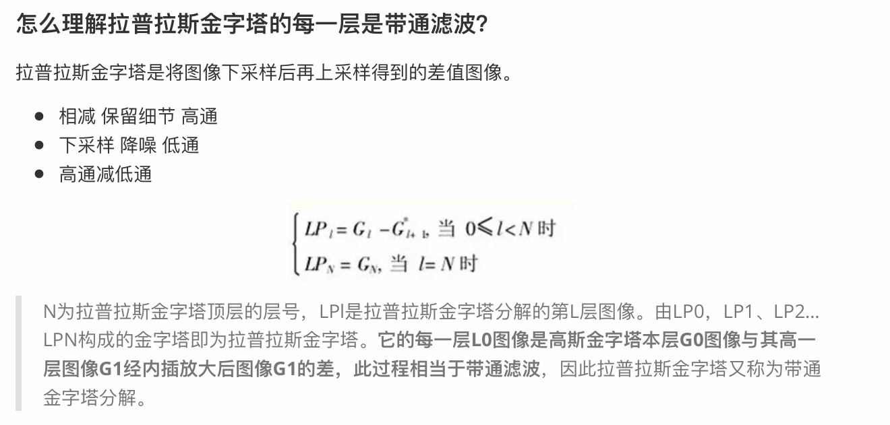
- 傅里叶变换在频率域上处理图像，可以有选择性地去除某些频率成分（高通或低通），分解图像
物体识别
- 基本任务
- 图像分类
- 特征提取
- 二次表达
- 训练分类器
- 检测和定位物体/图像分割
- 估计语义和几何属性
- 对人类活动和事件进行分类
- 图像分类
- 挑战因素
- 视角变化
- 光线变化
- 尺度变化
- 物体形变
- 物体遮挡
- 背景凌乱
- 内部类别多样
- 基于词袋（BoW）的物体分类
- 词袋：图像中的单词被定义为一个图像块的特征向量，词袋即所有图像块的特征向量的直方图
- 如何构建 visual word：提取图像中的局部特征描述符，对这些描述符进行聚类，得到视觉词汇。
- 基本步骤
- 特征提取
- 通过训练样本聚类来建立字典
- 用字典直方图二次表达一张图像
- 根据词袋分类未知图像
- 基于卷积全局优化的物体分类
- 卷积层：卷积操作是通过一个小的卷积核（滤波器来扫描输入图像（或上一层的特征图），生成新的特征图。每个卷积核会学习到一些特定的图像特征，比如边缘、纹理、颜色等。
- 池化层：池化层的作用是对卷积层得到的特征图进行下采样，减少特征图的尺寸，从而减少计算量，同时保留图像的主要特征。常见的池化操作包括最大池化和平均池化。
- 全连接层：将卷积和池化层提取到的特征进行整合，输出一个固定长度的特征向量，通过加权和偏置计算特征向量的线性组合，并通过激活函数（通常是softmax）输出最终的分类概率。
- \(\hat{y}=softmax(Wx)\)：将输入 x 经过线性变换后通过 softmax 得到各个类别的预测概率。
- softmax的作用
- 归一化：softmax 将每个得分转换为一个概率值，使得每个类别的预测概率都在 [0,1] 之间，并且所有类别的概率和为1。
- 强调高得分：由于 softmax 是指数函数的形式，较高的得分会变得更加突出，即它对应的概率值会更大；而较低的得分会使得对应的概率值变得较小。
- W 是一个 C×D 的矩阵，其中 C 是类别的数量，D 是输入特征的维度，每一行代表一个类别的权重向量，该向量决定了输入特征在该类别下的重要性。矩阵乘法 Wx 计算了每个类别的得分（logits），即通过线性变换将输入 x 映射到各个类别的得分。
- \(c_{pred}=argmax(\hat{y})\)：选择概率最大的类别作为最终的分类结果
- Batch技巧指的就是在深度学习训练中，将训练数据分成多个小批次进行训练，而不是使用整个数据集。
- Batch Normalization（批归一化）是一种在训练过程中对每个mini-batch的激活值进行标准化的技术，它能够加速训练并提高模型的泛化能力。它通过规范化每一层的输入，使其具有零均值和单位方差，解决了梯度消失和梯度爆炸的问题，从而提高了训练速度和稳定性。
- 注意力机制
- 对输入信息的不同部分（如文本中的单词、图像中的区域、序列中的状态）进行 加权建模，使得模型能够自动决定在特定任务中，哪些信息最为重要，从而有效地提高模型的表现和效率
- 查询（Query）：是当前要处理的信息。键（Key）：是与查询进行比较的参考信息。值（Value）：是在查询和键的关系决定后传递给输出的实际信息。
- 为什么加位置编码：自注意力机制的关键在于计算输入序列中每个元素之间的关系或依赖，这个计算过程本身不涉及任何关于元素顺序的信息。而在自然语言中，词语的顺序非常重要。
光流
- 解决问题：评估 H 到 I 的像素运动，给出图像 H 中的一个像素，找到图像 I 中相同颜色的像素。解决的是像素对应问题
- 三个基本假设
- 亮度恒定性 brightness constancy
- 空间相干性 spatial coherence
- 细微运动 small motion
- 自己推导一个点的约束等式
- 哪些位置光流比较可靠
- 纹理复杂区域，梯度比较大且方向不同，求出来两个 \(\nmbla\) 都比较大
深度学习
- end-to-end 学习：让模型自动学习从原始输入到最终输出的映射过程，而不需要传统机器学习中的特征工程和手工设计的过程。
- 本质上求解神经网络连接的权重
- 写出基于梯度下降法的学习框架
- 定义模型 \(\hat{y}=f(x,\theta)\) ，目标是找到参数 \(\theta\)
- 定义损失函数（均方误差/交叉熵损失）
- 计算梯度
- 更新参数 [ \theta^{(t+1)} = \theta^{(t)} - \eta \nabla_\theta L(\theta^{(t)}) ]
- BP 反向传播算法
- 通过反向传播计算梯度：BP算法的主要作用是计算神经网络中每个参数（权重和偏置）对于损失函数的梯度。通过这些梯度，网络能够调整参数，使得网络输出误差最小化。
- 与梯度下降法的关系：通过链式法则计算梯度
- 给计算公式，画计算图
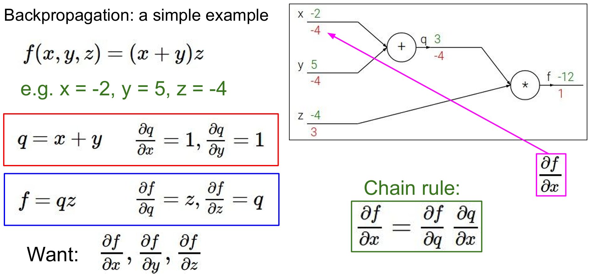
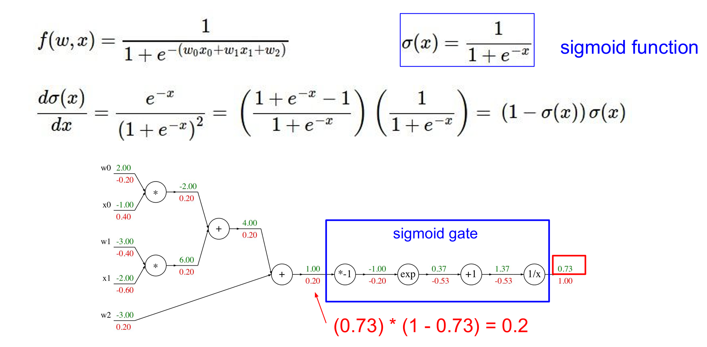
- CNN
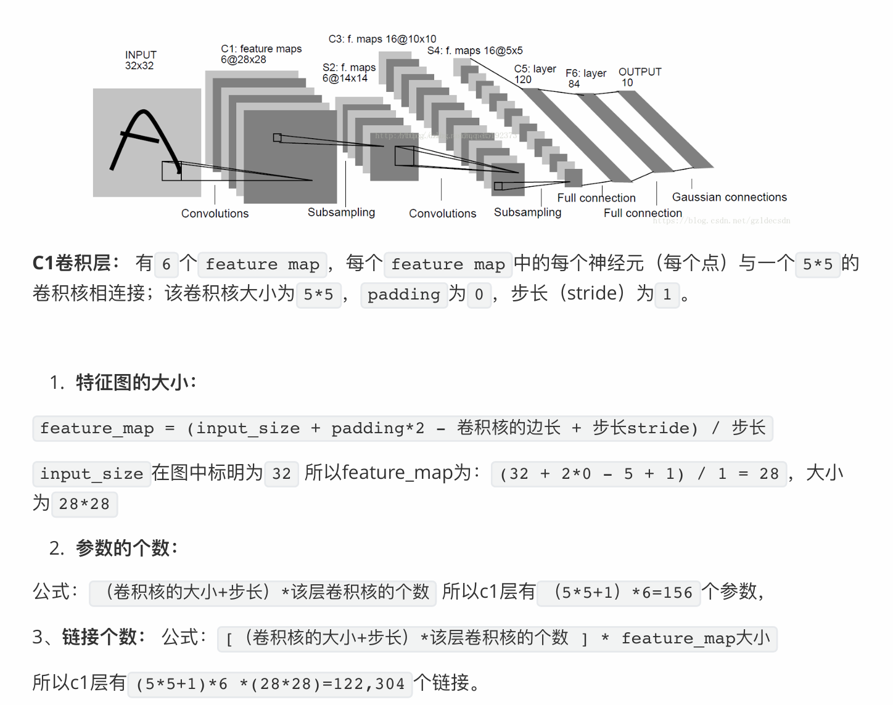
- 与全连接的改变：
- 局部连接：神经元与前一层的神经元的连接是局部的，即每个神经元只与输入图像的一部分（称为“感受野”）连接。通过使用卷积核（滤波器）进行局部加权求和，CNN能够仅从局部区域提取特征。这种方式大大减少了需要训练的参数量（相邻像素之间具有空间相关性）
- 共享权重
- 通过卷积操作进行特征提取，同时结合池化层（如最大池化、平均池化）来减少空间维度。卷积层的作用是通过卷积核在输入图像中提取局部特征，而池化层的作用是下采样，减小图像的尺寸，降低计算复杂度，增强特征的表达能力
- 层次化的特征学习
- 空间不变性
- 卷积层主要作用是从输入数据中提取特征，通过感受野和权值共享减少参数数量。
- 卷积层权重数量
[
\text{权重数量} = (k \times k \times C_{in}) \times C_{out}
]
- \(k \times k\) 是卷积核的大小。
- \(C_{in}\) 是输入通道数，因为每个卷积核会作用于所有输入通道（例如，对于彩色图像，通常有三个输入通道：红色、绿色、蓝色）。
- \(C_{out}\) 是输出通道数，也即卷积核的数量，因为每个输出通道对应一个卷积核。
- 通常情况下，在全连接层中，权重数和连接数是相同的，因为每个连接都有一个权重。而在卷积层中，权重数和连接数通常不同，因为卷积层通过局部连接和权重共享的方式，虽然每个卷积核与输入的局部区域有多个连接，但每个卷积核共享同一组权重。
- 与全连接的改变：
- 训练
- momentum 解决什么问题：通过引入动量来加速收敛，避免陷入局部最小值或震荡
- 注意力机制
- 对什么信息进行建模
相机模型
- 理解 景深、光圈、焦距、视场的关系
- 大光圈景深小，小光圈景深大
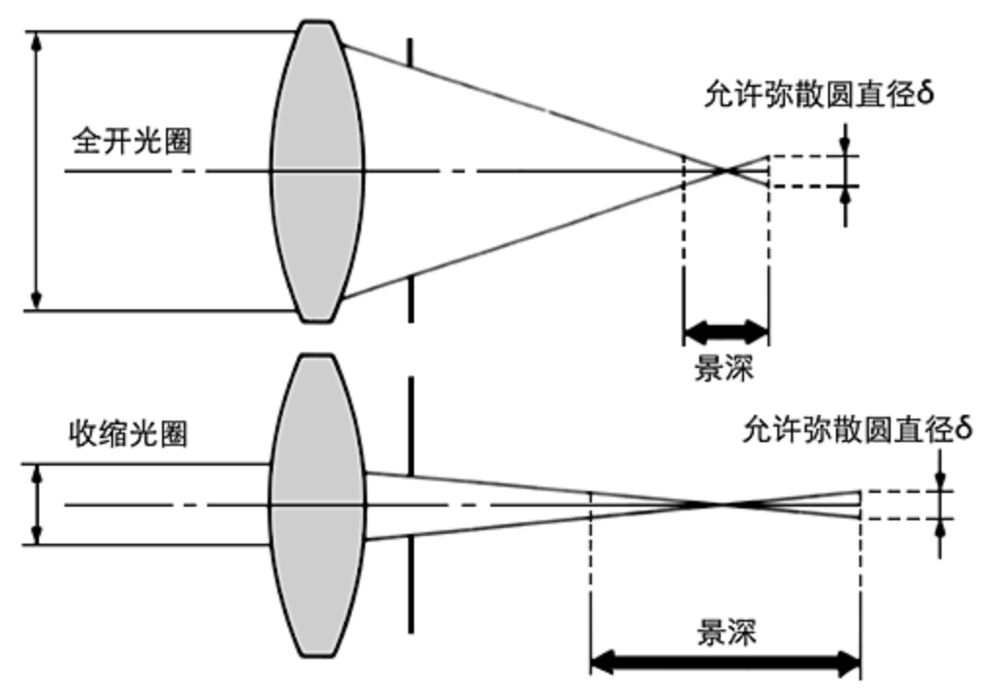
- 焦距越大，视场越小 \(视角=2arctan( d/2f )\)
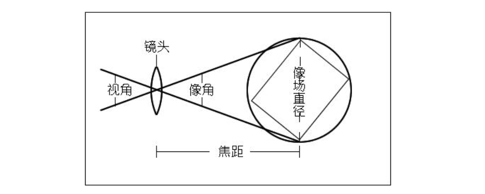
- 大光圈景深小，小光圈景深大
- 理想的针孔相机
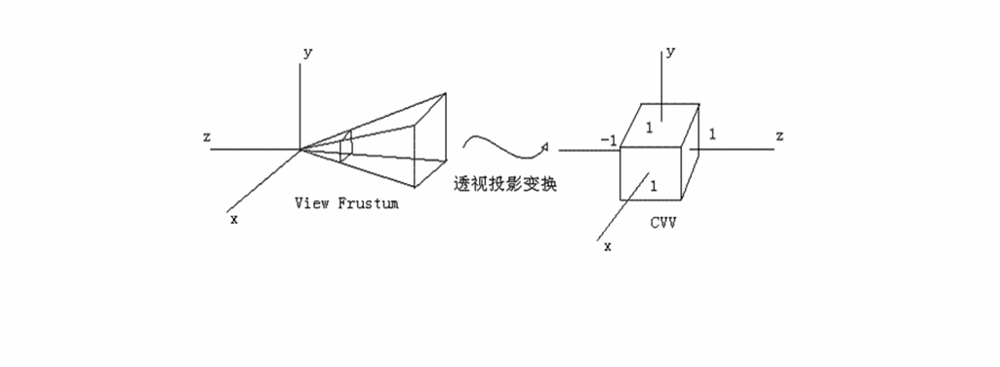
- 矩阵形式的公式
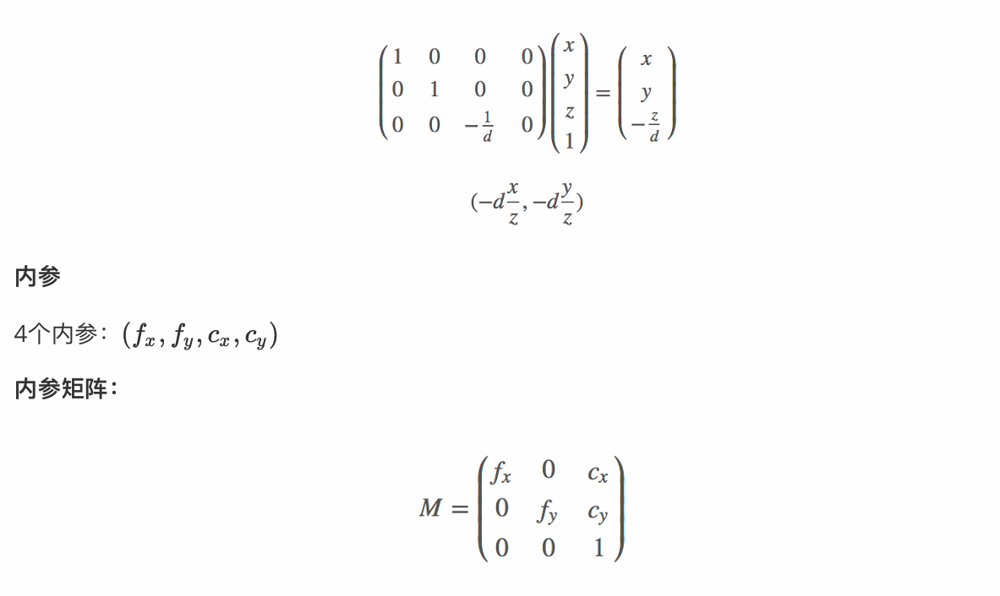
- 内参
- 投影保共线，角度/距离/平行不保
- 矩阵形式的公式
- 齐次坐标系
- 好处：把不规则的式子写成矩阵相乘的形式
- 与笛卡尔坐标系的换算
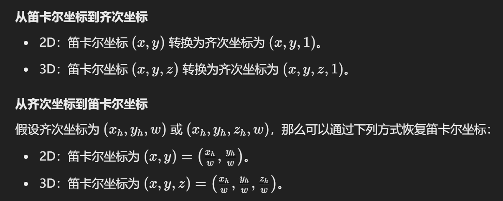
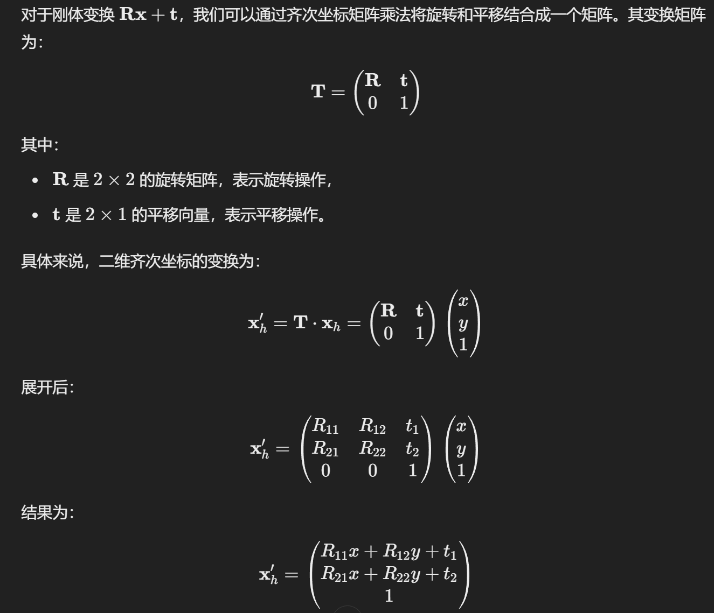
- 畸变
- 径向畸变：由于光线在远离透镜中心比靠近中心的地方更加弯曲
- 桶形畸变：中间向外凸起
- 枕型畸变：中间向内凹陷
- 切向畸变：由于透镜不完全平行于图像平面
- 径向畸变：由于光线在远离透镜中心比靠近中心的地方更加弯曲
- 相机外参
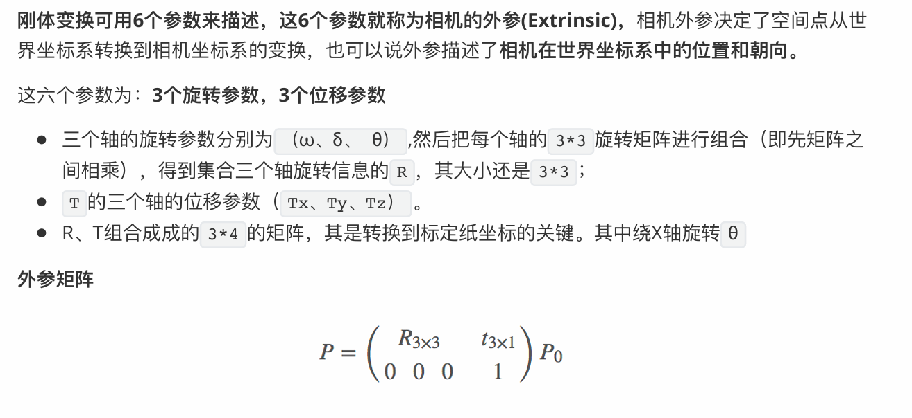
- 哪几个、什么含义
- 会写、推导外参矩阵
- 四个坐标系
- 图像坐标系、相机投影坐标系、相机坐标系、物体坐标系
- 会画
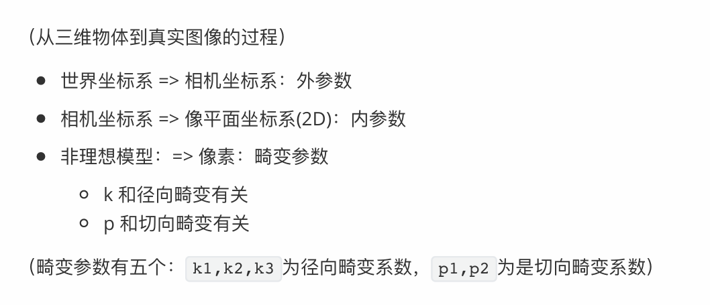
- 基于 Homography 的相机定标
- 最小二乘法
- 优点
- 简便性和易实现性：不需要精确的三维数据或深度信息。
- 无需特殊设备：只需要简单的平面物体和常规相机设备。
- 高效、稳定：能够高效计算相机内参和外参，且具有一定的鲁棒性。
- 四个步骤
- 获取标定物体网格的角点在坐标系的位置
- 找到图片的角点
- 根据图像空间坐标系到世界坐标系列出等式
- 求解相机参数
- 几个自由度？求解需要几个特征点：N 个点 K 个视角可以列出 2NK 个等式，会带来 6K+4 个参数，自由度 = 2NK-(6K+4)
立体视觉
- 三角测量基本原理
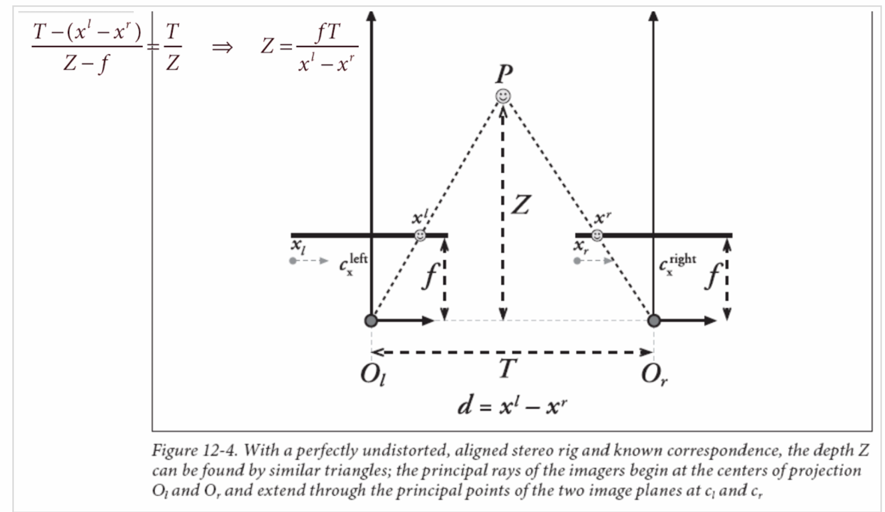
- 步骤
- 去畸变
- 矫正相机
- 两幅图中找到相同特征 correspondence
- 三角测量 reprojection or triangulation
- 为什么要相机标定：在立体视觉中，相机标定是非常重要的步骤，它能够提供精确的相机参数，确保通过两个相机（或多个相机）捕捉到的图像数据能够有效地进行匹配、融合、三维重建等任务。如果不进行相机标定，可能会遇到一系列的困难和问题，影响系统的精度和可靠性。
- 2D 转换为 1D 匹配：在水平扫描线上进行匹配，即忽略垂直方向的匹配，仅关注水平方向的位移。对于一个给定的像素点，1D匹配可以通过计算视差来完成，视差描述了在水平方向上的偏移
结构光三维成像原理
- 系统组成：结构光投影仪，CCD 相机，深度信息重建系统
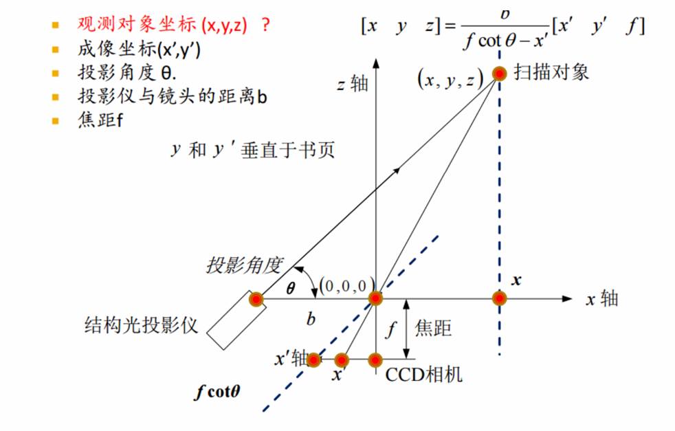
- IPC 算法
- 迭代最近点方法，用于多个相机的配准问题，即把多个扫描结果拼接在一起形成对扫描对象的完整描述
- 基本步骤：给定两个三维点集 X，Y，将 Y 配准到 X
- 建立两个扫描结果之间的对应关系
- 通过迭代获得一个仿射变化函数能够描述 1 中对应点之间的变换关系
- 对 Y 应用上一步求得的仿射变换，更新 Y
- X，Y 中距离最近的点作为对应点，计算对应点的距离，如果大于阈值，重复 2，3
- ICP 算法在 生活中的应用 涉及了 机器人定位与导航、自动驾驶、三维重建、医疗影像、虚拟现实、个性化定制、地理信息系统等多个领域
图像分割
- 基于聚类的图像分割：同一组内的元素具有更高的相似性，而不同组之间的元素相似性较低。
- k-means
- mean shift：算偏移均值并移动
- 为什么要转换色彩空间（如 HSV 或 Lab）：因为这些空间能够更好地表示颜色差异，尤其是在照明变化较大的情况下。
- Mean Shift 算法的本质实际上是 KDE的一个梯度上升过程。具体来说：